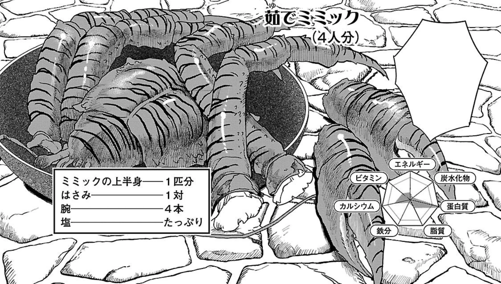

Boiled Mimic

Mimic Boiled with Salt
Recipe Description
It is prepared by boiling together only mimic and salt, and eaten much like other shellfish, using thin tools to dig out the chewy, flavorful meat.
Ingredients
- Mimic upper body
- Claws
- Legs
- Lots of salt
Steps
- Clean the mimic carcace
- Cut its aprts and add it on a boiler pan
- Add a lot of Slat and cook it
- Enjoy!